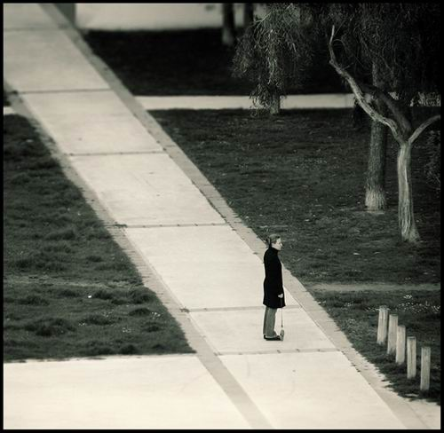
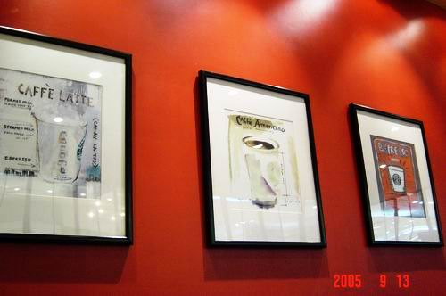
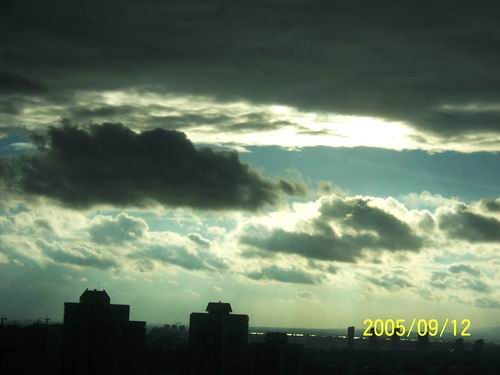
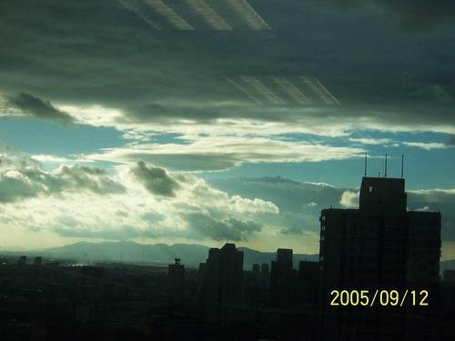
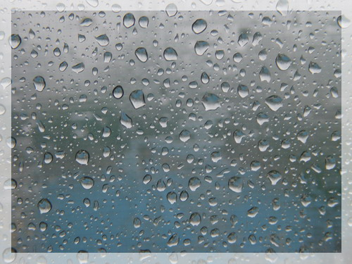
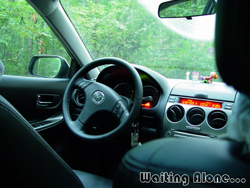

Archives : 2005-09
The Butterfly Effect @ Sep 27, 2005
 看完《The Butterfly Effect》仍然是让人烦躁的午夜时间。
看完《The Butterfly Effect》仍然是让人烦躁的午夜时间。
手捧胡萝卜和黄瓜滋滋有味地咀嚼，片子放了大约20几分钟的时候，之前的无聊没劲渐渐化作凝重，空气冻结，喉管堵塞......接下来的时间它一直吸引着我，和埃文一起迷失一起找寻痛苦...拯救自己。这是一部令人压抑窒息的片子，各种故事的假设和衔接自然到毫无痕迹，断裂的记忆和被挤压的痛苦一直纠缠着埃文也纠缠着我，埃文一次次从日记本里找寻根源的过程恰恰是他痛苦的过程。事实上这部电影描述的故事情节已经不重要，它所传达的某种气息和氛围，就象一根牵引观者重新经历某段记忆和感受的绳索，挣扎着位于即将崩溃的边缘，每一次每一次的游离......痛苦无望！
......从埃文敲开凯莉的房门，看见面孔带着伤疤颓废沮丧的凯莉时，我的心脏开始不断坠落，泪水似破裂的筏门无法收拾......埃文总是试图回到过去改变历史，那次的改变使他失去双臂，一切变得阳光明媚，周围的人都快乐地笑着获得好的生活和前途，片子的色彩变成暖色，他包揽了所有人的痛苦和悲哀，他把自己淹没在浴缸里就好象要淹没一切的不幸，活得精疲力尽了，死也是一种解脱。
美国电影大多是happy ending，两个有着相同痛苦却彼此不知道相爱的年轻人在人群中邂逅，凝望一下即擦肩而过......埃文与兰尼一起烧掉所有的日记本、DV和照片以告别过去，这个结尾显得有些仓促。但这并不影响找到共鸣的人在影片结束后打开雨后的窗户，做一个长长的深呼吸，我想这就是电影最好的效果吧！
它值得看第二遍，那时我会更关注情节而不是只体会到它的撞击。也许我会用笔记录下那些共鸣的细节，让看碟充满乐趣！
Oasis stop crying your heart out.mp3
蝴蝶效应是气象学家洛伦兹1963年提出来的。
其大意为：一只南美洲亚马孙河流域热带雨林中的蝴蝶，偶尔扇动几下翅膀，可能在两周后引起美国德克萨斯引起一场龙卷风。其原因在于：蝴蝶翅膀的运动，导致其身边的空气系统发生变化，并引起微弱气流的产生，而微弱气流的产生又会引起它四周空气或其他系统产生相应的变化，由此引起连锁反映，最终导致其他系统的极大变化。
意义在于，人的一生有若干种状态。我们在镜子粉身碎骨后很少注意到粉碎后的多个镜面折射出自己众多的影子，我们看到的永远是最少的一部分。正面，侧面，背面，左面，右面，右面的左面，左面的右面，前面的后面……记忆的碎片永远如同镜子一般会以多种角度折射出我们当时的模样，而这些残缺的折射最终将动摇我们的回忆。
life in mono @ Sep 27, 2005
The stranger sang a theme,
From someone else’s dream
The leaves began to fall
And no one spoke at all
But I can’t seem to recall
When you came along
Ingenue,
Ingenue,
I just don’t know what to do
The tree-lined avenue
Begins to fade from view
Drowning past regrets
In tea and cigarettes
But I can’t seem to forget
When you came along
Ingenue,
Ingenue,
I just don’t know what to do
Ingenue, I just don’t know what to do
God knows…... @ Sep 25, 2005
Incapable of more,replete with you, My most true mind thus maketh mine eye untrue.
对于具体的当事人来说，死亡是一个深不见底的黑洞，在任何时候，面对它都是困难的。可是，如果你把空间放大一下，马上就会释然了。人在不同时间里的不同感受，是一个非常有意思的话题。几分钟前的眩晕，走路失去重心，但很快就能恢复正常，待风拂过霓虹闪烁...谩过山林...凉了身体....那种不为人知的快乐陶醉在发白的天际。

Maybe Tomorrow @ Sep 24, 2005
Stereophonics -Maybe Tomorrow.mp3
I’ve been down and
I’m wondering why
These little black clouds
Keep walking around
With me
With me
It wastes time
And I’d rather be high
Think I’ll walk me outside
And buy a rainbow smile
But be free
They’re all free
So maybe tomorrow
I’ll find my way home
So maybe tomorrow
I’ll find my way home
I look around at a beautiful life
Been the upperside of down
Been the inside of out
But we breathe
We breathe
I wanna breeze and an open mind
I wanna swim in the ocean
Wanna take my time for me
All me
So maybe tomorrow
I’ll find my way home
So maybe tomorrow
I’ll find my way home
So maybe tomorrow
I’ll find my way home
So maybe tomorrow
I’ll find my way home
So maybe tomorrow
I’ll find my way home
So maybe tomorrow
I’ll find my way home
@无声无息 @ Sep 23, 2005
挂上电话便睡着了，最过分的是母亲没有喊醒我，依稀知道她给我盖上棉毯，我却怎么也睁不开眼睛...23:35分忽然醒来，安静的夜，只听得见自己的呼吸，起身走到书房窗前望昨夜的街景，一片茫然...此时此刻，我有驾驶的冲动......想找寻一个城市的角落，一个深深的角落，把自己藏起来，藏得连自己也找不到。
@1:55返回
走出那个家门比我想象的艰难......
光着脚走到门口，原来这门也有咿呀的声响，用了大约5分钟才轻轻推开门，在电梯里穿上鞋。
有关隐私或许一个看车库的老人比谁都清楚，他知道你何时出门何时返回，今天穿了什么衣服带着什么表情...一切的细节都逃不出他的眼睛。从他眼前走过总好过母亲的唠叨。河西的那条路上没什么车，打开双跳灯便堂而皇之的站在路中间拍摄片子，仅为寻找我要的那份感觉。感觉这东西有时还真玄，无声无息的，让人烦躁！


夜晚比白昼更需要方向感...
She will be loved @ Sep 22, 2005
Song: She will be loved.mp3
Artist: Maroon 5
Album: Songs About Jane

Beauty queen of only eighteen
She had some trouble with herself
He was always there to help her
She always belonged to someone elseI drove for miles and miles
And wound up at your door
I’ve had you so many times but somehow
I want moreI don’t mind spending everyday
Out on your corner in the pouring rain
Look for the girl with the broken smile
Ask her if she wants to stay awhile
And she will be loved
She will be lovedTap on my window knock on my door
I want to make you feel beautifulI know I tend to get so insecure
It doesn’t matter anymoreIt’s not always rainbows and butterflies
It’s compromise that moves us along
My heart is full and my door’s always open
You can come anytime you wantI don’t mind spending everyday
Out on your corner in the pouring rain
Look for the girl with the broken smile
Ask her if she wants to stay awhile
And she will be loved
She will be lovedI know where you hide
Alone in your car
Know all of the things that make you who you are
I know that goodbye means nothing at all
Comes back and begs me to catch her every time she falls
@1:11 @ Sep 21, 2005
一小时前是“爱牙日”，一小时前，也就是昨天，我却可笑的伤感了一把。

city of lights @ Sep 20, 2005
午夜0：06分结束。
耳机里一直播放着那首“city of lights”,疲惫的今天悄然来临。
打开书房的窗户，深吸一口气。
窗外白茫茫一片，是灰尘还是浪漫的白雾？
答案似乎并不重要。
A Water Lily @ Sep 19, 2005
What women want @ Sep 17, 2005
偏偏是个清闲的早晨，看到Stephen的E-MAIL回复，脑海里涌现偶像Mel Gibson几年前导演的一部电影《What women want 》，若全世界男人都在思考这个问题，那真是女人的荣幸了。

Stephen Ask:
既然是睿智的美人，想请教：女人到底要什么？
满足安全感实在，或者被人吹捧享受
这个问题比工作更让人困惑，偏偏最近忙得很，懒得想这样费解的问题，何况想也是白搭。
做不到“跳出三界外，不在五行中”，如何能想这样的问题？
是女人，又能徘徊在心之栅栏外想必能帮到我的
Christina Reply:
女人要的是：自我，爱，安全感，空间，快乐....
男人要什么？
Stephen Reply:
有点眼花，把“自我，爱”看成了“自爱”，心想：没错，没错女人都够自爱的。还记得有个女生说她天天逛街，花光钱买衣服，就是因为“女为乐己者容”。“自我”也没错，做个party animal，宁愿晚上睡办公室？
说起来这个问题有点唐突，请见谅。也亏得给出5个答案，让我不好意思。如果我选一个，安全感会放在第一，差不多是信任的意思。这个世界可以没有爱，但是没有信任，一切都是空中楼阁。
男人需要什么，女人一定知道，否则就不是女人。
所以问题成了男人还需要什么？
我的答案是：勇敢，无他。
但是有时候自己的想法不敢跟身边人说，所以要写下来，因为自己也不勇敢。
预祝中秋快乐
宣传一下...中文博客年会 @ Sep 16, 2005
横戈，这个名字一直有印象，也许是我关注的不够，今天才知道他是Blogbus的CEO。与横戈谈论到“十年”故事，估计我的话足以让他七窍生烟，他只是沉默了一会儿就毫无痕迹的继续话题了......在他那里看到“中文博客年会”的消息有点小兴奋，许多熟悉而陌生的blogger将在这个盛会上相见，wow…如何将之前的想象赋予真实的形象？！我最想见的是：6e，乌鸦嘴，Moko，Ziboy，王建硕，mvm（屋顶上的木帷幕 ），David（日落酒馆），jiajia，John......似乎我想见到的人还不多？！这些都是中国早期写Blog的人群，真正是熟悉的陌生人。

下面文章来自横戈.home...
记得是2003年底的时候，Isaac毛去美国参加Blogger大会，我跟Zheng在线上说：“什么时候我们能有一次自己的盛会，希望这天能早点来。”终于，将要在11月上海举行的首次“中国博客（网志）年会”（Chinese Blogger Conference），是中文Blogger的首次盛会——即时不仅仅是中国很多久负盛名、颇有影响力的博客参加大会，还有世界著名的Sixapart、Technorati等著名的Blog服务商参加大会，这是真正属于Blogger的大会。
这次国内第一次的Blogger年会，可以说是老横盼望已久的，然而，任何“第一次”总会有些遗憾和不足，但是无论如何有了第一次，总是一个开始，希望中文Blog能在更多人的支持和帮助下不断成长。由于筹备时间紧张，与会者又是松散的Blogger志愿者，大会的筹备和前期安排或有遗缺，不过相信以后会越办越好的。
无论是我个人，还是Blogbus的团队，一直以来都愿意为推动中文Blog的发展付出一份自己的力量。我们希望中文的Blog能够健康、迅速的发展，希望更多优秀的Blog能带给中文网络更多有价值、有意义、有趣的知识、信息和帮助，我们也愿为这次年会做任何我们力所能及的帮助，在此预祝年会举办成功！
PS：由于“Chinese Blogger Conference”中“Blogger”即写Blog的人，我们遵循通俗说法把大会放出的“中文网志年会”改为“中文博客年会”，否则中英文对照明显不符（‘网志’年会听起来象是一页页的‘web－log’去参加大会）。但还是注明（网志）是对原发起者和banner设计者表示尊重，但我想：既然是中文Blogger的大会，就让我们选用通俗的称谓，面向普罗大众吧！也希望下届大会有更多的力量支持，面向更多的中文Blog用户。
有关fashion两三事 @ Sep 16, 2005
当我穿着好几个洞的牛仔裤准备上班时，妈妈很不解的说道：“你没有好裤子穿了吗？怎么穿着破牛仔裤上班呀？”
今儿吃早饭，妈妈边用力拽我的衬衣边说到：“衬衣皱巴巴的，怎么不熨一下再穿呢？多难看呀！”殊不知这件衣服的叠放方式就是要拧成麻花状的，sigh~~
那个称我“beauty tiger”的横戈说：“我老爸老妈很早就会发短信，后来大家知道他们还看blog，被认为是很fashion，其实他们也不想想儿子做这个的，他们看看有什么稀奇！”
小聚 @ Sep 14, 2005
连续两个晚上和女伴约会聊天，精神亢奋，生理却极度疲惫，开始透支......
现在最想做的是沉沉的睡一觉，然后轻松的醒来。希望每天都可以这样。




嗨，你好， 是我， 一名歹徒。 @ Sep 13, 2005
《Dragostea din tei》是去年在全世界非常流行的罗马尼亚歌曲，还记得一个国外的胖子模仿口型演唱这首歌的印象吗？
《Dragostea din tei 》.mp3
“椴树之恋”或者”菩提树之恋”
Ma-ia-hii Ma-ia-huu Ma-ia-haa Ma-ia-ha-ha
嗨，你好， 是我， 一名歹徒。 我求你， 我的爱人，接受幸福吧。 嗨 嗨， 是我， 毕加索。 我给你发一声beep，而我自觉强大无比。 但你要知道我不是在要求你什么。
你想走，不想不想要我 不想 不想要我 不想 不想 不想要我 你的脸孔和爱是从椴树里来的 而我会记着你的眼睛的。
你想走，不想 不想要我 不想 不想要我 不想 不想 不想要我 你的脸孔和爱是从椴树里来的 而我会记着你的眼睛的
我给你打了个电话， 来告诉你我对你现在的感觉 嗨， 是我， 你的幸福 嗨 嗨， 是我，毕加索 我给你发一声beep，而我自觉强大无比。 但你要知道我不是在要求你什么。
Ma-ia-hii Ma-ia-huu Ma-ia-haa Ma-ia-ha-ha
Ma-ia-hii Ma-ia-huu Ma-ia-haa Ma-ia-ha-ha Alo, Salut, sunt eu, un haiduc, Si te rog, iubirea mea, primeste fericirea. Alo, alo, sunt eu Picasso, Ti-am dat beep, si sunt voinic, Dar sa stii nu-ti cer nimic.
Vrei sa pleci dar nu ma, nu ma iei, Nu ma, nu ma iei, nu ma, nu ma, nu ma iei. Chipul tau si dragostea din tei, Mi-amintesc de ochii tai.
Vrei sa pleci dar nu ma, nu ma iei, Nu ma, nu ma iei, nu ma, nu ma, nu ma iei. Chipul tau si dragostea din tei, Mi-amintesc de ochii tai.
Te sun, sa-ti spun, ce simt acum, Alo, iubirea mea, sunt eu, fericirea. Alo, alo, sunt iarasi eu, Picasso, Ti-am dat beep, si sunt voinic, Dar sa stii nu-ti cer nimic.
Vrei sa pleci dar nu ma, nu ma iei, Nu ma, nu ma iei, nu ma, nu ma, nu ma iei. Chipul tau si dragostea din tei, Mi-amintesc de ochii tai.
Vrei sa pleci dar nu ma, nu ma iei, Nu ma, nu ma iei, nu ma, nu ma, nu ma iei. Chipul tau si dragostea din tei, Mi-amintesc de ochii tai.
南京今天的傍晚 @ Sep 13, 2005
借同事相机拍摄的,不拍太过分了~~



赤名莉香 @ Sep 13, 2005
赤名莉香是《东京爱情故事》整部戏的灵魂，一名很特别的女孩，对爱情的态度是这样的坦率，不管结果如何即使头破血流还是勇往直前。面对爱情压力，一味付出而受伤时却用微笑掩饰自己来维持最后一点尊严；在自私而虚伪的人群中，莉香就像是个小精灵，灿烂的笑容，直率的个性，出人意表的行为。
“所谓恋爱，只要是参加了就有意义，即使没有结局。当你喜欢上一个人(一个好人)的那一刹那，是永远都不会消息的。这都将会变成你活下去的勇气,而且会变成你在黑暗中的一线曙光。”莉香这样对三上说。所以无论完治对里美怎样无法忘怀，莉香对完治的爱也不会有任何变化，即使那么一点也不会少。因为莉香是那么的执着，“因为这是我找到的爱啊，我是不容许任何人去破坏它的,即使那个人是完治。”
或许，这样的爱对完治是个沉重的负担，完治承受不了莉香的爱。莉香爱得太重!？莉香的爱会让人喘不过气!？莉香的爱让完治觉得不知所措!？不能回应沉重的爱是完治的懦弱，也是完治对莉香爱的不够。莉香笑着的外表下，不安的是自己的情感。
当三上问莉香：“你喜欢完治吗？”
“喜欢”莉香笑得甜甜地说。
“可是他喜欢里美啊。”
“那又怎样？我完全被这种‘我喜欢你，不管现在你的心是为谁而牵挂，可我还是要努力的喜欢你。’强烈的感情感动著。”
虽然莉香忠于自己的感情，但也不自私，比起里美只为了自己不再受伤，寻找安定的爱情而选择完治，莉香是个心地善良的人。所以莉香才会把里美的电话号码塞给完治，给完治票让他去约会里美，同时也努力的喜欢着完治。如此坚强而令人心疼的莉香......
“……我要你24小时爱我……你的心里只能有一个，而不是两个……你到底把你的心放在那里！？……你要好好抓住我……不然……我会跑掉的！”
你好，完治。 应该是晚上好了吧！趁你去买东西的时候，我写了这些话。就要跟你分别了，也许有点儿难过，不管怎么样，总希望与你在相同的季节，相同的道路上走下去，爱下去。完治，真有点儿依依不舍，一想到马上要分别，心里总有点空荡荡的，虽然我的将来也许会更好，可是我总认为，碰上了你，是我人生的一大快乐，不想再说再见，也不想约定什么，因为我们还会再见的。—赤名莉香
遗落的季节 @ Sep 12, 2005
5:40分又醒了。

shot by Christina
@5:55 Sep-12-2005
想起《陪我失眠》那首歌，出于好奇想看看早晨的MSN上都有谁在...一如歌词中的便利店...4个人在线，一个还算熟悉，另外三个不知道是谁。有个ID显示着：play it,play “as time goes by”......
天空早已不是夏日那种疯狂的颜色，在青灰的天色中一声倦倦的叹息，随细雨打在窗户上，却成了淡淡的和风。下着雨的窗前，现实世界离我那么远，宁静而自由。不禁低叹：有什么是我们可以把握的？要以怎样的疯狂、怎样的速度才能彼此在这大千世界上并驾齐驱？...徘徊在心之栅栏外，也许应该把心情藏起来，这便是最好的珍惜。
成熟是错误的积累...从另一个角度看也是美丽的刹那！
5°微笑 @ Sep 12, 2005



秋或感觉 @ Sep 08, 2005
原来一切就会转瞬既逝。
原来一切还将周而复始。
原来一切不著痕迹，仅为天地存于那心......
她闭着自己的眼睛。
不是害羞。是她潜意识地去感知一个全然属于自己的世界......她只需要一切的感知。
这沸沸扬扬的晕眩，随着音符滑过圆盘滑过红绿灯滑过一条狭长的街道...左转右转...被苍白的路灯剪散，风又吹扬...
假如一切因此就会失去平衡？更何况她已有了一个成年女人的愁倦......昙天下不知谁的灯还亮着温暖的橘色，与她的凝望相默契，那时侯很自然得留下她一个人。
曾以为秋是东郊一片金黄的落叶，是一片温馨的灯光，是眩目的阳光和乍凉的夜晚。谁知秋有一种距离，象故意疏远的一些亲近，即使用手触摸，也能感觉指间所存在的压抑与渴望......语言如此单薄，那声音终会袅袅地消失，也不该写下只言片语，这似乎也是亵渎。不如默默望一眼，产生一些遗憾和神秘地感知，从今年到来年，或许是一辈子。
秋天就会结束，不管怎样，下一个季节还在继续......
from big friend @ Sep 06, 2005
大朋友不会变化多端，很包容...给人以安全感。我为有这样的朋友感到快乐！
Christina，首先，很难过你的狗狗。那确实是一只很可爱的狗狗。
你丢狗狗的那几天，也正是我最不开心的几天：工作太忙少睡觉，硬碟又忽然坏了，几年中拍的照片全失去了。再加上一些其它的事情。天又热。
不过我一直认为你不该养狗:养狗是闲人的事情。
其次，喜欢你最近的那几张光膀子的照片，以及日记。
似乎你只有在幽思怨想的时候才能写出好的（有思想有感情的）东西。
也许那才是真正的你。人在社会中生存，会不同程度地屈服于人群的压力。但最终又回到自己，因为只有成为自己才最舒适，像脱掉了鞋子光着脚一样自如。
不要为自己的与人不同而不安。
Be yourself。
Drifting…漂移... @ Sep 02, 2005
这是尚存气息下的最佳选择，选择不去在意或者放弃，当你感到没有能力和信心去把握某件事情时。这世界变化如此得快，必须有足够的无知与无畏，然而眼下这已是你有关青春的另一种遗失！如若理性逻辑再出现故障，这世界，让人如何了得？
一个朋友告诉我南京有一家汽车改装厂，可以改装车子，他准备过两天去装个涡轮增压。据说一个初级的改装只要2/3000，可以选用静音的排气管，声音不大。人家外面的车子都有T字头的,，自己改一下不也是1.6T了吗?他哈哈的笑道：“你的也就是2.0T了。以后车上座几个胖子我也不在意了 ，车上四个人上坡都感到没什么劲呢！一个涡轮才800元，不如你一个水晶贵呢。基础改装全部做了才3000元，你可有兴趣？......我现在感觉我正在向着汽车DIY的方向发展.....以后说不定自己改改这个改改那个的，不是很好吗？根据自己的需要改装车子，COOL极了，早晚我会搞明白这些东西是怎么搞的。人家的车从你边上飞过去，你心情会好? 就算车不如人家的快，你也可以挡住它吧！（这种心理我怎么从来没有过呢？难道男人的胜负心太重？）http://www.qcgz.cn/Index.html这是那家南京的改装厂的联系方式，你可以问问他M6有什么可以改的，说不定可以改出不错的效果呢？！”我脑海里立刻浮现出电影中飙车的镜头，我穿着陈晓春的皮衣皮裤....真cool！我们都必须很理性的把持住自己，这世界随时随地都能让人疯狂，nnd…..
想起前天晚上大约11点多钟，在清凉山公园附近，两辆改装过的Bora从我的车边争相呼啸而过，发动机的声音震响整个街道，恍如置身于《头文字D》的场景里，当我惊魂未定那两辆车已经不见踪影。Michael说：“有一天我回家. 前面一辆路虎，我在它的后面等红灯， 绿灯一亮， 它就像箭一样射出去了。 看的我嘴张的合不起来了。 强！”事实上当我车内音响开到15时，我已经觉得自己够“漂移”了，无论如何一种生活方式的诞生需要的是心情和实力。
漂移（Drifting）：后轮失去大部分（或者全部）抓地力，同时前轮要能保持抓地力（最多只能失去小部分，最好当然是获得额外的抓地力了），这时只要前轮有一定的横向力，车就甩尾，便会产生漂移！
在中国，除了少有的几个城市—-台湾、香港、澳门、上海等等外，而其他的城市并没有专业的赛车场地！在如今赛车比赛漫天飞舞的情形下，中国却没有几个能称之正规赛车比赛的赛事，没有几条能用与正规比赛的赛道，在全球也没有几个能称之为专业赛车比赛的车手！要是这在其他国家这可能算不得什么，但是对堂堂大国—有东方巨龙、东方雄狮之称的中国而言，这不得不说是一种悲哀！十四亿人口啊，居然找不到一个象样的......汗颜呐！
于是在这种情形下，一种新的“非法种族”—飑车一族就理所当然的诞生了！你要是还不明白，你自个儿开快车去各大城市试一下，你看交警追不追你，呵呵~~~所以飙车一族一直以来都是生活在黑暗之中的，也只能在黑暗中生活！在凌晨一点到四点的时间段，绝对是属于这些年轻的飙车一族的……